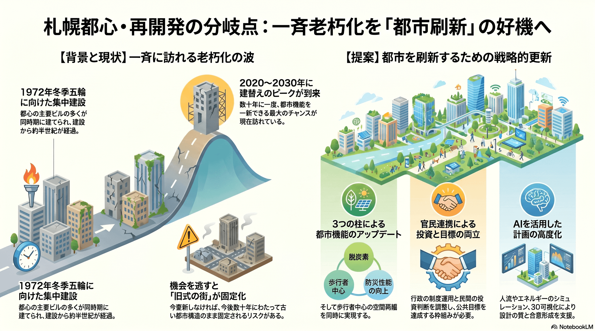

都心再開発・まちづくり
今すぐ
都心建物の一斉老朽化と建替えピーク
札幌都心の建物の多くが同時期に建てられ、一斉に更新期を迎えている。

背景
札幌都心の主要ビルの多くは1972年冬季五輪に向けて短期間に集中して建てられた。半世紀を経て建替えが集中する今は、都市を脱炭素・防災・歩行者中心に刷新できる数十年に一度の機会である。
事実
- 札幌都心部の建物の多くは1972年冬季五輪に向けてほぼ同時期に建てられ、老朽化が進んでいる。
- 都心部の建替えは2020〜2030年にかけてピークを迎えるとされ、市は建替え機会を捉えた都市更新の制度を運用している。
解釈
建替えの集中は都市を刷新する好機であると同時に、機会を逃せば旧式の街がそのまま固定される分岐点でもある。
提案
- 建替え機会を捉えた環境性能・歩行者空間の底上げ（民間の投資判断との調整が要）。
- 更新の集中時期の平準化と公共空間の再編。
検討体制・メンバー
札幌市まちづくり政策局・都市局が制度を運用する。検討会にはビルオーナー・デベロッパー、建築・都市デザインの専門家、エネルギー・防災の技術者、商店街や来街者の代表を加え、民間投資と公共目標を両立させる枠組みが要る。
AIノート
AIの貢献度は中。人流・日照・風環境のシミュレーションや、街区単位のエネルギー・脱炭素設計の最適化、合意形成のための3D可視化で計画の質を上げられる。判断の主体は事業者と行政で、AIは設計と検討の高度化を担う。